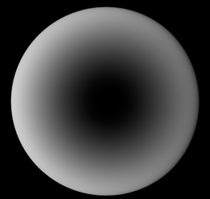

<!DOCTYPE html>
<html lang="en">

<head>
  <meta charset="UTF-8">
  <meta name="viewport" content="width=device-width, initial-scale=1.0">
  <meta http-equiv="X-UA-Compatible" content="ie=edge">
  <link rel="stylesheet" href="../../css/normalize.css">
  <link rel="stylesheet" href="../../css/styles/agate.css">
  <link rel="stylesheet" href="../../css/dark.css">
  <script src="../../js/jquery-3.2.1-compressed.js"></script>
  <script src="../../js/highlight.pack.js"></script>
  <script src="../../js/index.min.js"></script>
  <title>纹理</title>
</head>

<body>
  <aside id="sidebar">
    <section id="catalog">
      
      目录
    </section>
  </aside>
  <div id="showCatalog">
    
  </div>
  <article id="container">
    <hgroup>
      <h1 id="title">纹理</h1>
    </hgroup>
    <section>
      <h2>纹理图层</h2>
      <p>
        大多数纹理选项中，可以选择纯色作为纹理，也可以添加其他纹理效果作为纹理图层。
        <figure>
          
          <figcaption>添加纹理图层</figcaption>
        </figure>
        当添加纹理图层时，通用的可选项有：
        <figure>
          
        </figure>
        <h3>菲涅尔</h3>
        即径向渐变，色条左侧为四周边缘颜色，色条右侧为中心点颜色。
        <figure>
          
        </figure>
      </p>
    </section>
    <section>
      <h2>反射</h2>
      <p>
        <h3>反射类型</h3>
        C4D 中可选择的反射类型有：
        <figure>
          
        </figure>
        <h3>层颜色</h3>
        即反射颜色。
        <h3>层遮罩</h3>
        与层颜色进行相加运算，功能上可以作为蒙版对层颜色进行遮罩（白透黑不透），也可以作为多层反射使其颜色进行叠加。
        <h3>层菲涅尔</h3>
        <h3>层采样</h3>
      </p>
    </section>
    <section>
      <h2>参考文献</h2>
      <p>

      </p>
    </section>
  </article>
</body>

</html>